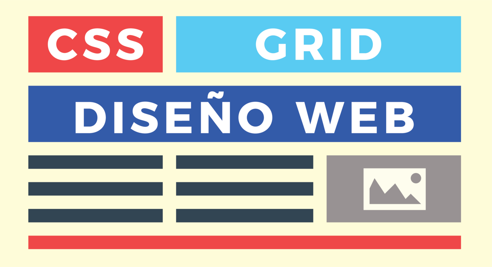
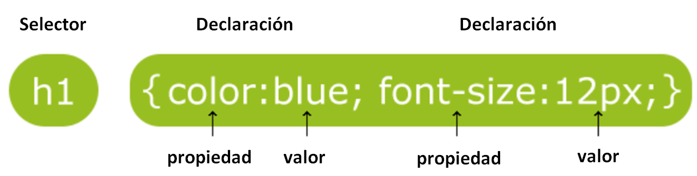
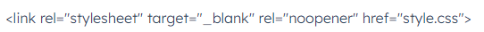
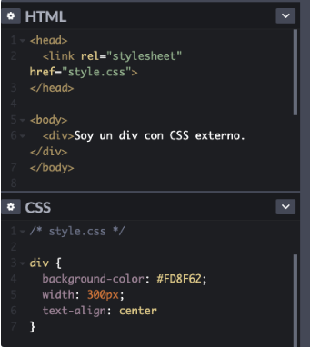
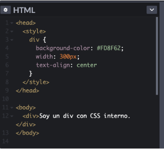

¿Que es CSS?

CSS es un lenguaje de hojas de estilos creado para controlar el aspecto o presentación de los
documentos electrónicos definidos con HTML y XHTML. CSS es la mejor forma de separar los
contenidos y su presentación y es imprescindible para crear páginas web complejas.
Separar la definición de los contenidos y la definición de su aspecto presenta numerosas
ventajas, ya que obliga a crear documentos HTML/XHTML bien definidos y con significado
completo (también llamados "documentos semánticos"). Además, mejora la accesibilidad del
documento, reduce la complejidad de su mantenimiento y permite visualizar el mismo
documento en infinidad de dispositivos diferentes. (Eguíluz Pérez, 2008)

Características y ventajas de las CSS
el modo de funcionamiento de las CSS consiste en definir, mediante una sintaxis especial, la forma de presentación que le aplicaremos a los elementos de la página.
Podemos aplicar CSS a muchos niveles, desde un sitio web entero hasta una pequeña etiqueta. Estos son los principales bloques de acción.
Un web entero , de modo que se puede definir en un único lugar el estilo de toda una web, de una sola vez.
Un documento HTML o página en particular. Se puede definir la forma de cada uno de los bloques de contenido de una página, en una declaración que afectará a un solo documento de un sitio web.
Una porción del documento, aplicando estilos visibles en un trozo de la página, como podría ser la cabecera.
Una etiqueta en concreto, llegando incluso a poder definir varios estilos diferentes para una sola etiqueta. Esto es muy importante ya que ofrece potencia en nuestra programación. Podemos definir, por ejemplo, varios tipos de párrafos: en rojo, en azul, con margenes, sin ellos... (Introducción a CSS, 2020)
Los 3 tipos de estilos CSS
1. CSS externo
El CSS externo existe en su propio archivo. Este archivo está enlazado a un documento HTML con una etiqueta . Este es el método más usado para añadir CSS a HTML, ya que una hoja de estilo externa puede dictar el estilo de diferentes documentos HTML.
Para crear un archivo CSS, escribe tu código en cualquier editor de texto o editor de código y guarda el archivo con la extensión .css; para vincularlo con un archivo de HTML, guarda tus HTML y CSS en la misma carpeta y luego pega el siguiente código dentro de la sección "head" del archivo HTML:

Agrega en "style.css" el nombre de tu archivo CSS. Las reglas de este archivo se aplicarán en cualquier archivo HTML que haga referencia a él con el elemento "link" de arriba.

2. CSS Interno
El CSS interno es un código CSS incrustado en un documento HTLM. Está escrito dentro del elemento "style", que se acomoda en la sección de "head":

El CSS interno puede utilizarse para algunos proyectos pequeños de web y páginas individuales con su propio estilo. En estos casos será más fácil guardar todo tu código en el mismo archivo y no en dos.
3. CSS en línea
CSS en línea se ubica dentro de una etiqueta HTML para cambiar el estilo de un elemento en específico. La sintaxis inline es un poco diferente de lo que hemos visto: la declaración está escrita como el valor del atributo de estilo.

Aunque es posible, usar este método viola la práctica de separar el estilo del contenido, por eso no se recomienda su empleo. El CSS en línea es ineficiente para programar y resulta más difícil de comprender que los otros dos. Aun así, es bueno que lo conozcas para que lo puedas identificar, si se presenta el caso.
Informacion tomada de (Santos, 2022)
4 ejemplos de CSS
CSS es útil para llevar a cabo diversas modificaciones de estilo mediante el uso de código. Los siguientes ejemplos de CSS te darán un panorama de las posibilidades de uso del lenguaje para familiarizarte con algunas de sus implementaciones: